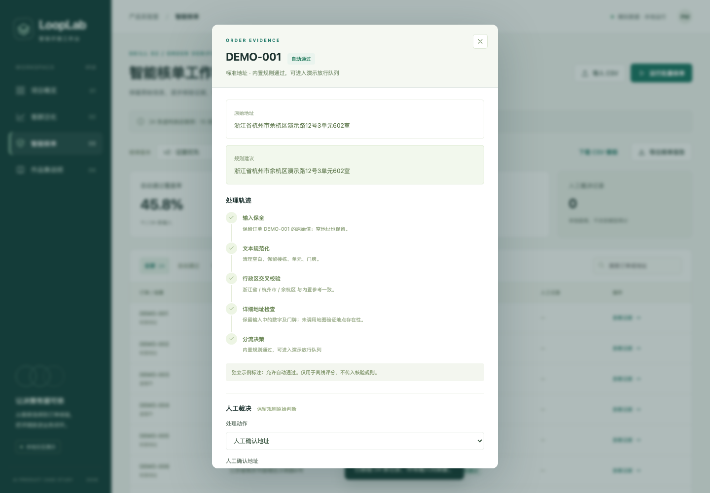

意向分流与整通评测
调整观望、咨询与拒绝的判断；组织人工标签对照、Bad Case 归因与规则复测。
主案例 04—10AI 营销与任务型 Agent｜帮助一线识别需求、准备跟进、完成有效承接。
主案例：外呼意向分流与企微承接
专项：人群策略验证 / 地址核验与人工复核
工作复盘 + 个人方案 + 四个原型 + 同任务规则对照
以工作中的具体决策为主线，用个人原型展示任务控制方法。
调整观望、咨询与拒绝的判断；组织人工标签对照、Bad Case 归因与规则复测。
主案例 04—10参与 PRD、FAQ/RAG、摘要与转人工；参与核单任务、地址 Skill 和链路测试。
交接 08 / 核单 13—14定义任务、流程、约束与验证；借助 AI 编码，实现状态、审核、失败恢复和证据展示。
机制 07 / 源码 15围绕一线 FL 的跟进工作，把客户信号、知识依据、行动与结果串起来。
客群选择、资格与联系间隔分别判断；给出筛选依据与排除原因。
人群策略专项 → 11—12结合原话和有效知识准备建议，顾问核对后创建可接续的任务。
意向与承接主案例 → 04—10领取、联系、退回与拒联分别记录；定位失败和人工返工。
反馈进入规则与评测迭代从整通评测中定位误判，调整定义、判断和澄清，再组织复测。
客户未明确拒绝、仍在询问价格等信息时，保留咨询信号，结合整通上下文再分流。
将观望和明确拒绝分开；价格顾虑与继续询问可以并存，不能只看负向表达。
把修改原则落实到判断与追问。具体旧新 Prompt 和生产版本需原始记录核对。
主导整通最终意向评测，结合质检和人工抽查归因，提供错误样本并组织复测。
从“咨询但未定”到“允许本次企微报价”，中间需要澄清和确认。
“有点贵，最近不急。
优惠后落地多少？”
识别价格顾虑和问价；当前缺城市、配置与有效报价。
“杭州，入门版。
先了解，合适再考虑。”
报价条件变清楚；系统仍需核实有效价格及可用渠道。
“先不用转，发到
已经加的企微上吧。”
确认好友关系和资格后，交付核实并发送报价的任务。
模糊表达、改口和跨句指代适合比较模型能力；固定状态转移先用确定性工作流。
诉求 / 顾虑 / 时机 / 拒联 / 渠道许可
不确定字段留空；改口保留历史
来源 / 适用地区与配置 / 有效期 / 冲突
缺条件先澄清；资料失效转核实
已有实现边界：DriveFollow 先生成规则计划，可选模型只改写草稿；新增意向规则对照；真实模型与 RAG 比较待执行。
下面四项机制可在源码和既有工程测试中核对，分别属于独立原型。
| 触发条件 | 已实现的控制 | 核对入口 |
|---|---|---|
| 查询失败 / 规则过期 | 停在当前步骤，保留失败日志；重试或显式更新演示规则后继续 | DrivePulse · 恢复测试 ↗ |
| 重复审核 / 资格变化 | 重复审核返回已有任务；创建前重新检查触达资格 | DrivePulse · 执行门槛 ↗ |
| 模型失败 / 本地服务不可用 | 模型接口失败回退规则草稿；浏览器离线回退并显示模式 | DriveFollow · 回退逻辑 ↗ |
| 客户拒联 / 尚未接通坐席 | 取消已排回拨并阻止重启；转接以空闲坐席接受为成功 | DriveReach · 业务状态 ↗ |
承接卡把事实、证据、缺口与允许的动作放在一起，减少重新问一遍的成本。
已有好友：确认关系和资格后进入报价任务；发送结果等待渠道回执。
尚未添加：先获得添加许可，再追踪邀请和添加结果。
未领取 / 执行失败：保留队列、超时与失败原因，提供人工接续。
中心问题对应中心验证；工作历史结果另列口径，不混入这组模拟数据。
简化失败模式基线 vs 修订规则。16 条咨询参照中，被判拒绝 12/16 → 1/16。
D01—D12 开发；F01—F24 冻结检查。由同一 AI 助手编写规则与参照，非独立盲测。
电话拒联漏识别仍为 1/4；冻结结果未用于本轮调规则，暂不扩大自动执行。
逐例输入、输出、错误字段、规则 CPU 计时与哈希均已保存。没有模型费用或业务增益测量。
基线是失败模式的简化复现，不是原生产系统；历史同批约75%→约90%见附录18。
把识别、执行、解决和成本分开看；每一层都有明确的分母与失败去向。
| 层级 | 如何验收 | 谁确认 |
|---|---|---|
| 离线质量 | 冻结新整通样本，双人标注；检查咨询漏判、误升高优、无依据回答和拒联后动作 | 产品 + 业务标注 + 算法 |
| 任务执行 | 成功率 = 有合格回执的任务 ÷ 范围内已启动任务；超时与未领取计失败或待处理 | 产品 + 研发 + 业务 |
| 营销价值 | 看有效首次联系、建议采用/修改/驳回和顾问复用；客服迁移另看问题解决与重开 | 业务负责人 + 数据 |
| 效率与体验 | 总人工分钟含复核、补采和返工；同时记录 p95 延迟、满意度响应率与每个解决任务成本 | 运营 + 数据 + 产品 |
先按当前人工基线、错误损失和服务 SLA 约定数值门槛。越权写入、无依据承诺等严重问题触发暂停并复核。
任务：有限资源优先联系谁，以及这套选择能否在后续批次保持效果。
二维覆盖 15.78%，三维 21.76%。二维留出富集更高，三维能选中更多客户。
下一步按同预算或同覆盖比较，再用新批次决定试投。
Lift 为入选客群出单率相对同集合整体出单率。历史留出参与过选型；1.27 不代表因果增长 27%。
交付物是规则、依据与适用范围；让运营知道何时可用、何时应重新验证。
客户隔离、结果成熟窗口、指标分母、覆盖和区间；防止结果字段泄漏到特征。
提出候选维度、整理分析与报告。数值由代码计算，结论引用可核验结果。
综合绝对出单率、覆盖、稳定性和总成本，确定观察、试投或重新开发。
订单履约前，候选地址必须有足够证据；自动化覆盖和错误成本一起权衡。
其中错误 9 / 20
问题拦截 4 / 13
其中错误 0 / 11
问题拦截 13 / 13
24 条既有合成挑战案例；0/11 只描述这组样本。演示版本不是生产版本，未证明实际地区可履约准确率。
完整保留订单、原值、候选、冲突和人工意见，支撑补采、重试与复核。

建立独立真值，记录每百单复核、补采及返工分钟。
公开仓库可直接阅读、下载；源码、模拟数据、测试与设计说明分别归档。
人群筛选 → 资格校验 → 人工审核 → 反馈回流。
github.com/Sienna-cat/drivepulse ↗事实与来源 → 顾问确认 → 待办与模拟试驾。
github.com/Sienna-cat/drivefollow ↗对话字段证据 → 拒联控制 → 转接或确认回拨。
github.com/Sienna-cat/drivereach ↗客群开发与冻结测试；地址证据、分流与人工裁决。
github.com/Sienna-cat/looplab ↗用一个高频任务推进试点：准备一次有依据的客户跟进，并记录实际承接结果。
观察顾问如何查资料、补问和记待办；记录任务频次、准备时间及返工原因，决定 MVP。
比较同类任务的总人工分钟与有效承接；记录建议修改、驳回原因和再次使用，保留失败任务。
可迁移到订单查询与异常转人工。新增身份核验、订单权限、工单与 SLA；退款赔付由人工审批。
当前可证明业务决策与局部原型机制；真实 FL 采用、模型收益和客服迁移仍待验证。
双岗位讲述 → JD 能力与源码证据 → 课程咨询主案例 →
多业务外呼至企微产品中的课程线索场景；主导分流与整通评测，参与知识问答和人工承接。
人工承接缺少诉求与历史记录。先交付摘要和人工跟进，再扩展企微知识问答。
规则问题优先有效 FAQ；课程内容经检索重排。低置信、政策缺口及退费风险交人工，保留已答与待解。
知识问答及人工承接已上线；35%→15%等为外呼产品整体口径，未单独核验课程RAG解决率。
保留事实范围；样本、原配置和分母未取回的部分直接列缺口。
| 归属 / 历史数字 | 已知口径 | 缺口与归因边界 |
|---|---|---|
| 兑吧整通意向 约75% → 约90% | 人工抽检整通中AI终判与人工复核一致占比；MVP到上线约1个月，同批复测。 | 原n、抽样/标注明细、旧新配置缺失；非独立测试，不归因单条规则或RAG。 |
| 兑吧整体介入率 35% → 15% | 外呼产品整体历史记录，下降20个百分点。 | 原介入事件、分母、窗口缺失；不能推导净省人力、解决率或单客户提升。 |
| 百应闪彩CPA 15元 → 10元 | 闪彩消费金融外呼加微成本。 | 成本项、有效加微分母、去重及窗口待核验；不借用到汽车客户。 |
| 百应长轻 单线索成本 −50% | 长轻养生人群与对话策略优化记录。 | 有效线索定义、成本项、样本和实验版本未归档；不作单因素因果归因。 |
| 核单2000+/日 百应500万+/月 | 前者为需求规模；后者为所负责项目通次。 | 非全部自动完成量；原时间窗口、分流/去重报表未提供。 |
完整口径与取证清单 ↗。新合成规则实验不能补证上述生产数字。
保留本人贡献与缺失原件之间的边界；以下是回顾整理，不是当时会议纪要。
| 依据 / 决定 | 现在能展示 | 仍需原件证明 |
|---|---|---|
| 本人确认的规则原则 | 未明确拒绝且仍在问价，保留咨询，结合整通澄清；不因RAG回答不了判无意向。 | 原始客户话语与旧新生产Prompt未取回，示例不冒充原话。 |
| S13 / S20-E03、E04 | 履历记录支持：主导分流/整通评测，提供Bad Case并复测；参与PRD/评审和企微上线。 | 原PRD版本、发布单、逐例复测记录及这处改动的下游增益缺失。 |
| 版本选择与协作 | 已有记录：摘要和人工跟进优先，之后扩展知识问答。业务定义标签/知识，算法研发联调，产品组织验收。 | 依赖图为本轮整理；未取得当时评审意见、签收及具体团队分歧记录。 |
| 本轮可运行补强 | 12开发＋24冻结检查；意向/拒联/建议路径逐例对照，保留6个失败。 | 真实模型、独立业务标注、销售采用/退回及净耗时待测。 |
F16—F21 为24条合成检查中的6条失败；本轮结果产生后未修改被冻结规则。
| 案例 / 模拟表达 | 修订规则仍错在哪 | 产品上的下一步 |
|---|---|---|
| F16 “我可没说不买…” | 误判拒绝，建议结束。 | 比较否定范围理解；不要靠“不买”词项终判。 |
| F17/F18 “那分三年呢” “就这个数再商量” | 忽略前轮咨询，判未知。 | 比较整通上下文与省略解析；同输入/路由器比较模型。 |
| F19 “顶配和入门差在哪” | 词表漏覆盖，判未知。 | 验证同义表达泛化；新样本独立标注。 |
| F20 “免谈，往后也别找我” | 意向与电话拒联均遗漏。 | 高风险失败，不能开放自动联系。 |
| F21 “车已提走，别再打电话” | 电话拒联识别正确，意向与路径仍错。 | 同时验收标签、许可和动作，不能只看单字段。 |
本次仅规则建议；高优分类、价格答案、真实工具动作未测试。模型延迟和费用未测。下载参照、原始输出、规则与复跑说明 ↗
Q01—Q12 为既有讲述种子的精简摘录，未经真实模型执行；不计入D/F验证分母。
| ID | 模拟客户表达 | 判断与处理边界 |
|---|---|---|
| Q01 | 有点贵，最近不急。优惠后落地多少？ | 咨询+价格顾虑；补条件，缺实时价转核实。 |
| Q02 | 现在不买，年底有活动再看看。去年优惠还会有吗？ | 条件性观望；不承诺未来活动。 |
| Q03 | 隔壁便宜两万，你们贵在哪，能再便宜吗？ | 竞品比较；先核实同车型/配置。 |
| Q04 | 月供两千内才考虑，首付多少，有手续费吗？ | 条件性需求；核实完整贷款条件。 |
| Q05 | 旧车还能抵多少，算补贴合适才换。 | 置换咨询；估值和资格分别核实。 |
| Q06 | 先不买，就是问问多少钱。 | 弱咨询；不自动升为高优。 |
| Q07 | 帮同事问价，别给我安排销售。 | 代问；不派本人销售任务。 |
| Q08 | 嗯，再说吧。 | 未知或结束信号；不反复追问。 |
| Q09 | 暂时不需要，也不想了解。 | 结束本次营销；不自动回访。 |
| Q10 | 再便宜也不买，以后别打电话。 | 拒绝+电话拒联；取消相应待执行任务。 |
| Q11 | 别打电话，报价发已经加的企微。 | 电话停；企微仅本次用途，先核实关系/资格。 |
| Q12 | 你说优惠一万，页面写两万，今天按哪个？ | 资料冲突；核实地区、版本、有效期后回答。 |
两版简历共享真实经历；按岗位改变入口和重点，不更改任职年限或项目事实。
04 产品决定 → 09 规则验证 → 18 历史口径 → 15 原型。
先讲懂车帝购车场景及本人分流职责；百应汽车/卖车交付、蔚来CRM作为业务基础。补人群策略和核单质量。
尚缺真实FL采用、净耗时、生产版本与独立模型验证。正式产品任职自2025.12起。17 课程主案例 → 18 指标归属 → 10 结果验收 → 07 机制。
先讲摘要优先、FAQ/RAG与上下文交接；核单Skill补任务拆解，百应两个项目补复用交付和线路质量。
生活服务工单、Harness/OneAgent、长期记忆是能力缺口或迁移设计，未写成已落地。